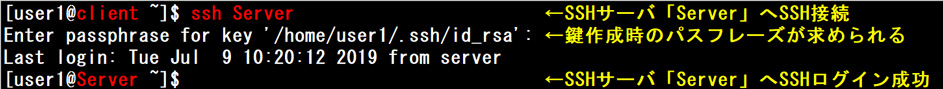
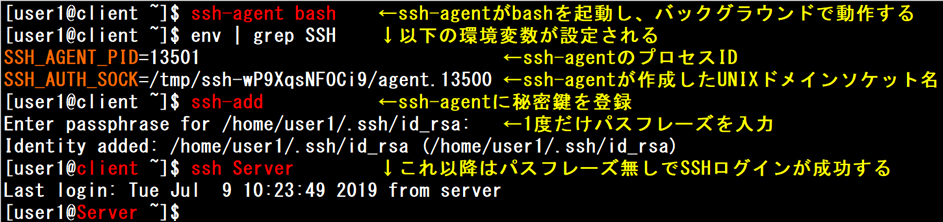
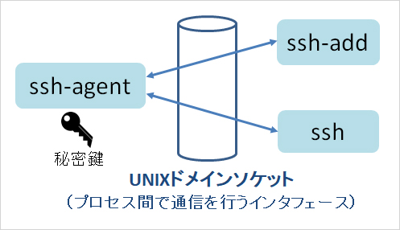
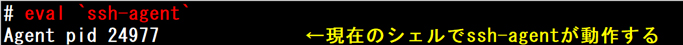
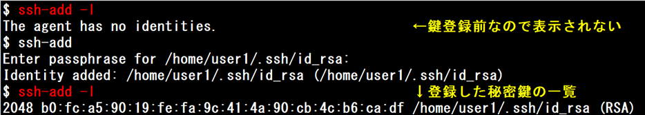
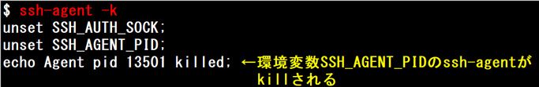
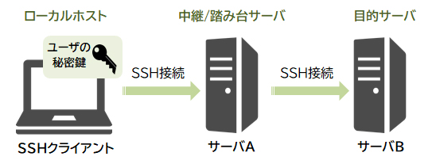
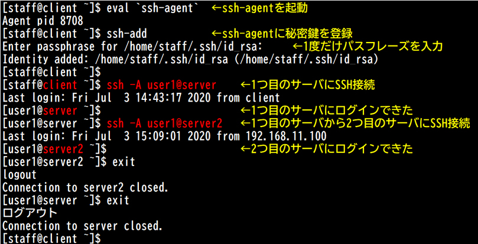

- 問題ID : 15763 暗号化によるデータの保護
- 履歴
正解
ssh-add
解説
「ssh-keygen」コマンドでキーペアを作成する際にパスフレーズを設定している場合、その秘密鍵を使用する際には毎回パスフレーズの入力が求めら
れます。パスフレーズ付きの秘密鍵を使ってSSH接続する際に毎回パスフレーズを入力しないで済むようにするには、「ssh-agent」を使用します。
ssh-agent
はメモリ上に秘密鍵を保管しておく認証エージェントです。ssh-agent起動直後は鍵情報が登録されていませんので、「ssh-add」コマンドで秘
密鍵とペアになるパスフレーズを入力して鍵情報を登録します。これ以降は登録した秘密鍵を使用したSSH接続時にパスフレーズの入力が求められなくなりま
す。
したがって正解は
・ssh-add
です。
以下は実行例です。
■SSHクライアントからSSHサーバへのSSH接続

■パスフレーズを聞かれないようにするためには（ssh-agentの設定）

その他の選択肢は全て存在しないコマンドなので、誤りです。
参考
「ssh-
keygen」コマンドでキーペアを作成する際にパスフレーズを設定している場合、その秘密鍵を使用する際には毎回パスフレーズの入力が求められます。パ
スフレーズ付きの秘密鍵を使ってSSH接続する際に毎回パスフレーズを入力しないで済むようにするには、「ssh-agent」を使用します。
ssh-agent
はメモリ上に秘密鍵を保管しておく認証エージェントです。ssh-agent起動直後は鍵情報が登録されていませんので、「ssh-add」コマンドで秘
密鍵とペアになるパスフレーズを入力して鍵情報を登録します。これ以降は登録した秘密鍵を使用したSSH接続時にパスフレーズの入力が求められなくなりま
す。
ssh-agentを起動するとバックグラウンドで動作し、ssh-addやsshコマンドはssh-agentが作成したUNIXドメインソケット（プロセス間で通信するためのインタフェース）を介してssh-agentと通信を行います。

以下は実行例です。
■SSHクライアントからSSHサーバへのSSH接続
■パスフレーズを聞かれないようにするためには（ssh-agentの設定）
「ssh-agent bash」コマンドでssh-agentはbashを起動し、バックグラウンドで動作します。ssh-agentによって起動されたシェル内で子プロセス としてssh-addやsshコマンドを実行すると、これらの認証エージェントとしてssh-agentが機能します。
なお、指定した文字列を評価後に連結して実行させるevalコマンドでssh-agentを起動することも可能です。この場合、現在のシェルでssh-agentが動作します。

ssh-agentに登録された秘密鍵の一覧を表示するには「ssh-add -l」を実行します。

ssh-agentを終了するには「ssh-agent -k」を実行します。すると、ssh-agentの起動時に設定されたSSH_AGENT_PID（ssh-agentのプロセスID）のssh-agentがkillされます。

【SSH Agent Forwarding】
SSH Agent Forwardingとは、ローカルホストからサーバAに、さらにサーバAからサーバBのように多段階でSSHアクセスする際に、パスフレーズを聞かれないようにしたり、秘密鍵を中継サーバに置かなくていいように、認証情報を転送する仕組みです。
ロー カルホストでのみ秘密鍵をssh-agentに登録しておけば、その後のSSH接続でもssh-agentが秘密鍵を引き継ぎ、複数のホストを経由した公 開鍵認証が可能になります。例えば、目的のサーバには中継サーバからしかSSH接続できないようにして踏み台サーバとする運用で、秘密鍵が流出するリスク を減らせます。（ユーザの公開鍵は各サーバの「~/.ssh/authorized_keys」に登録しておく必要があります。）

SSH Agent Forwardingを許可するには以下の設定が必要です。
・SSHサーバの設定ファイル「/etc/ssh/sshd_config」で「AllowAgentForwarding yes」を設定します。（デフォルトはyes）
・次のいずれかの方法で許可します。
- SSH接続時に、sshコマンドで「-A」オプションを使用します。（「-a」オプションで禁止）
- 常に許可するには、SSHサーバのシステム設定ファイル「/etc/ssh/ssh_config」、または接続先ユーザの設定ファイル「~/.ssh/config」で「ForwardAgent yes」を設定します。
以下は、sshコマンドで「-A」オプションを使用して接続する例です。
